店舗のMeta広告（Instagram・Facebook広告）は、①基礎知識、②運用戦略、③広告制作、④アカウント設計、⑤公開と改善、の5ステップで進めます。結果を分けるのは、広告費の大きさや撮影機材ではなく、配信前の設計です。「誰に何を案内するか」と「予約1件にいくらまでかけられるか」を先に決め、公開後は最終的な成果からさかのぼって数字を見ます。
この記事は、YouTube動画「【完全版】店舗広告の始め方｜Meta（Facebook/Instagram）広告運用の基礎▶︎実践まで大公開」の内容を、図とあわせて読みやすくまとめ直したものです。記事中の図は動画で使った画面です。管理画面を操作する様子は、動画でご覧いただけます。
この記事で分かること
この記事では、店舗オーナーのためのMeta広告運用を、基礎から実践まで順を追って解説します。これまで一度も広告を出したことがない方でも、自分のお店の広告を公開できるところまで進められる内容です。必要な準備、画面での設定、公開後に確認する数字を、一通り扱います。
私はこれまで、美容サロン、整体院、飲食店、学習塾、スポーツ教室など、さまざまなジャンルの50店舗以上で、集客や採用を支援してきました。
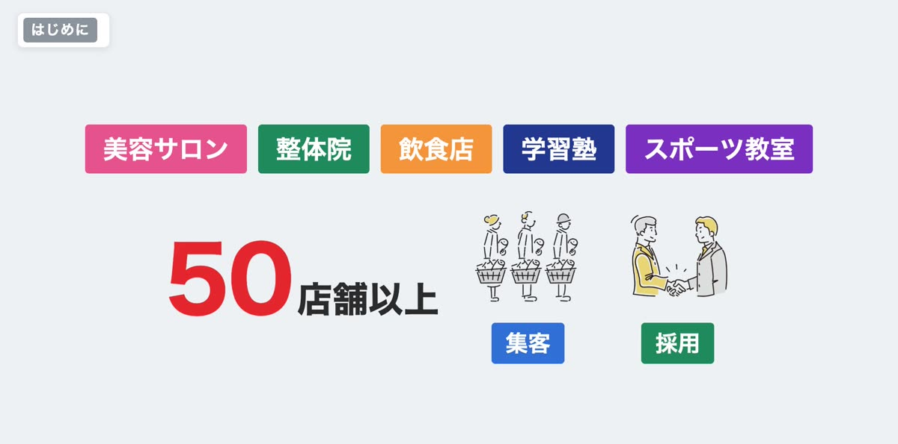
支援の現場で気づいたのは、次の2つのケースが非常に多いということです。
- 設定を誤ったまま、費用をかけ続けてしまう
- 難しい設定につまずいて、一度も広告を出せないまま時間が過ぎてしまう
どちらも、最初の組み立てを理解していれば防げます。最初の設計が正しければ、初心者の方でも、しっかりと成果を出すことができます。実際に支援した店舗では、次のような成果が出ています。
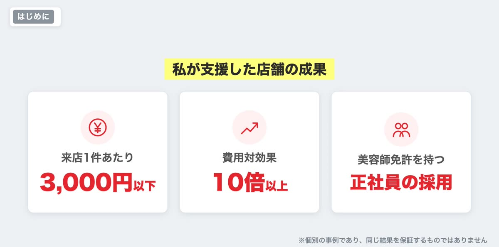
※個別の事例であり、同じ結果を保証するものではありません。
以前、単発のコンサルティングを募集した際は、「初期設定」に関する応募が集中し、受けきれずに受付を締め切ったほどです。それだけ、最初の設定に悩む方が多いということです。この記事では、広告を出す前の設計から公開後の確認まで、必要な順番に沿って丁寧に説明します。
こんな悩みはありませんか
まず、ご自身の状況に近いものがあるか確認してください。
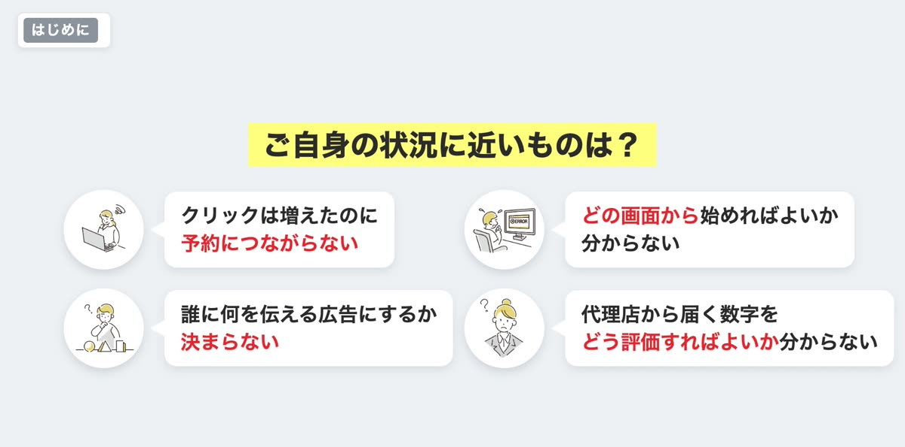
- 広告を配信したものの、表示やクリックは増えたのに、予約につながらない
- 広告アカウントを作ろうとしても、どの画面から始めればよいか分からない
- アカウントはできたものの、誰に何を伝える広告にするか決まらない
- 代理店から届く数字を、どう評価すればよいか分からない
こうした悩みは、店舗の広告運用でよく見られます。あなただけの悩みではありません。Meta広告は、それだけ分かりにくいものなのです。この記事では、それぞれの悩みを、広告が届く仕組み、配信の準備と設定、公開後の数字の見方という順番で解いていきます。
予算・機材・地域より、配信前の設計で差がつく
広告と聞くと、始める前から「自分のお店には無理かも」と感じる方も多いと思います。よくある3つの心配について、先にお答えします。
「広告費を何十万円も使えるお店だけの話では？」
そんなことはありません。月3万円ほどで広告を運用し、しっかりと成果を出しているお店も多くあります。
「高い機材やセンスが必要なのでは？」
これも違います。支援している店舗の多くは、オーナーさんがスマホで撮った写真や動画を、そのまま広告に使っています。高い撮影機材やデザインのセンスがなくても、問題ありません。
「都市部でなければ難しいのでは？」
これも違います。地方のほうが、広告を出す競合が少なく、有利に働く場合もあります。
結果を分けるのは「配信前の設計」
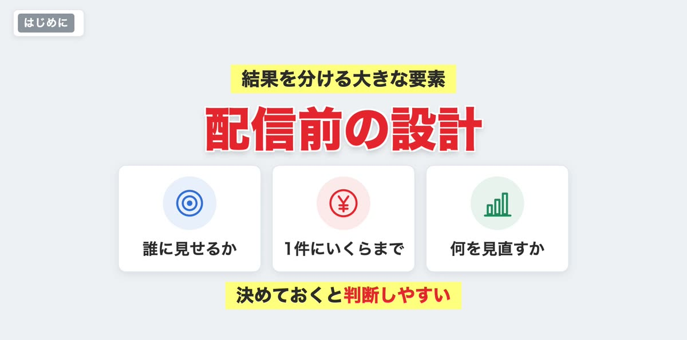
結果を分ける大きな要素は、配信前の設計です。具体的には、次の3つを決めておくことです。
- 誰に見せれば、予約につながりやすいか
- 来店1件に、いくらまで費用をかけられるか
- 数字が変わったときに、何を見直すか
これらを決めておくと、結果を判断しやすくなります。反対に、設計がないまま広告や設定を変え続けると、何が結果に影響したのか分かりません。改善を偶然に任せないために、この記事では設計の手順を一つずつ示します。ご自身のお店に当てはめながら読み進めてください。
始める前に、案内したいメニューを1つ決める
ここで、紙かスマホのメモを用意してください。そこに、今回の広告で案内したいメニューを、1つだけ書きます。たとえば整体院なら、「肩こりの初回施術」などです。
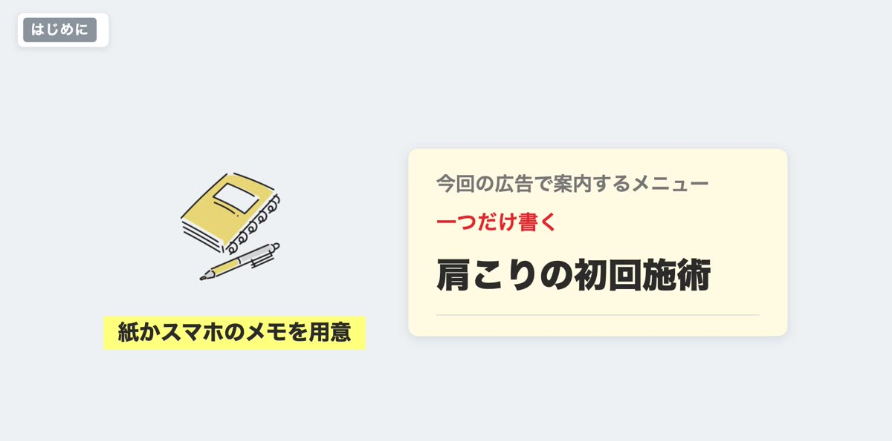
複数のメニューを一度に宣伝しようとすると、誰に何を伝えるかが曖昧になります。ここでは仮の決定で構いません。あとから見直せます。
以降の説明では、書いたメニューを自分のお店の例として当てはめてみてください。ただ読むよりも、広告の設計を具体的に考えやすくなります。
Meta広告とは？予約までの5ステップ
Meta広告は「投稿を宣伝」とは別のもの
Meta広告は、主にInstagramやFacebookに広告を出せる仕組みです。Instagramで投稿したときに表示される「投稿を宣伝」という機能がありますが、それとは別のものです。Meta広告は、専用の管理ツール（広告マネージャ）とアカウントを使って配信します。配信する相手、目的、予算、広告の見せ方などを細かく設定し、結果を数字で確認できるのが特徴です。
予約につなげるまでの5ステップ
Meta広告で予約につなげるまでの流れを、5つのステップに分けて解説します。
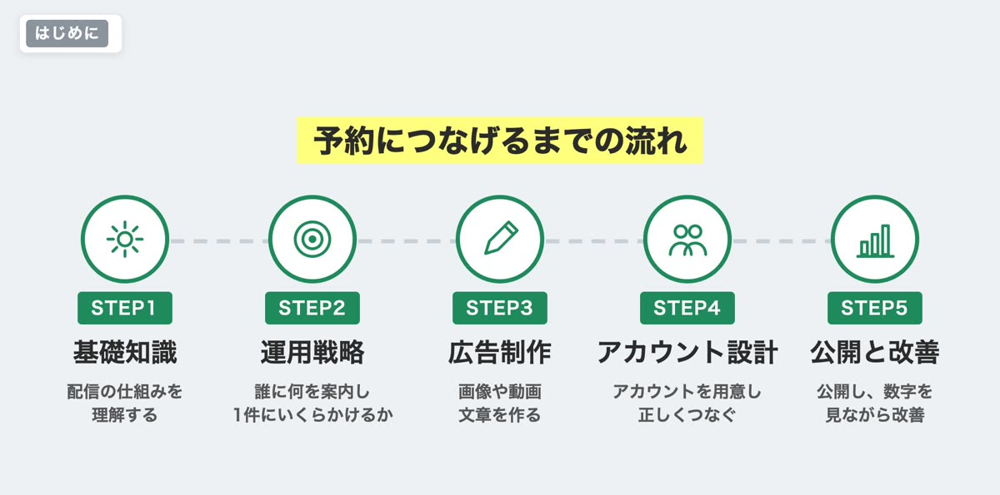
| ステップ | やること |
|---|---|
| STEP1 基礎知識 | Meta広告がどのような仕組みで配信されるかを理解する |
| STEP2 運用戦略 | 誰に何を案内し、1件の成果にいくらまでかけるかを決める |
| STEP3 広告制作 | 広告に使う画像や動画、文章を作る |
| STEP4 アカウント設計 | 広告を出すために必要なアカウントを用意し、正しくつなぐ |
| STEP5 公開と改善 | 広告を公開し、数字を確認しながら改善する |
この順番には、重要な理由があります。基礎知識と運用戦略を決める前に設定画面を開くと、配信はできても、結果をどう判断すべきか分からなくなります。だからこそ、STEP1が非常に重要です。一度では理解しきれない内容もあるかもしれませんが、繰り返し読んで、身につけてください。
STEP1 基礎知識：押さえる考え方は3つだけ
STEP1では、Meta広告の仕組みを押さえます。ここで扱うのは、細かなノウハウではなく、本質の話です。Meta広告で押さえるべき考え方は、大きく3つだけです。
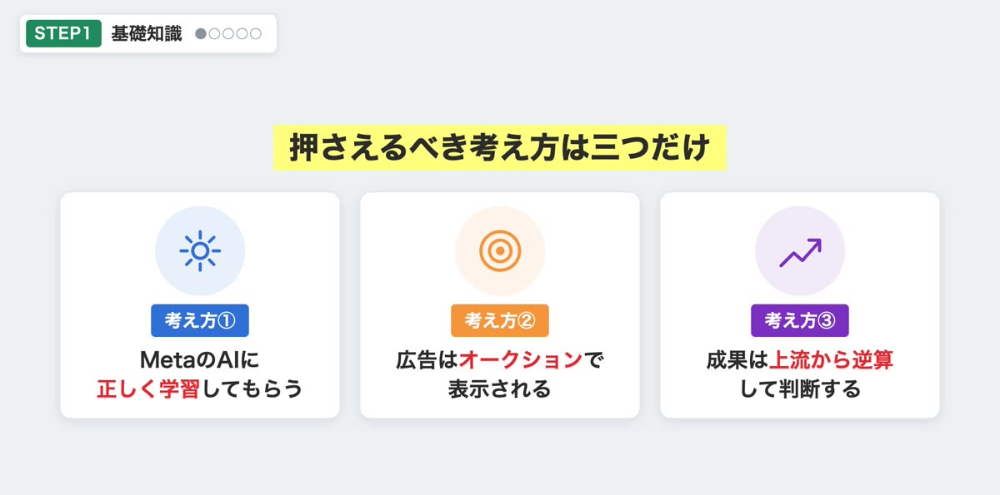
- MetaのAIに正しい情報を渡し、正しく学習してもらうこと
- 広告はオークションによって表示されること
- 成果は上流から逆算して判断すること
この3つを押さえているかどうかで、月10万円を使うお店より、月3万円のお店のほうが多くのお客様を集める、ということも起こります。
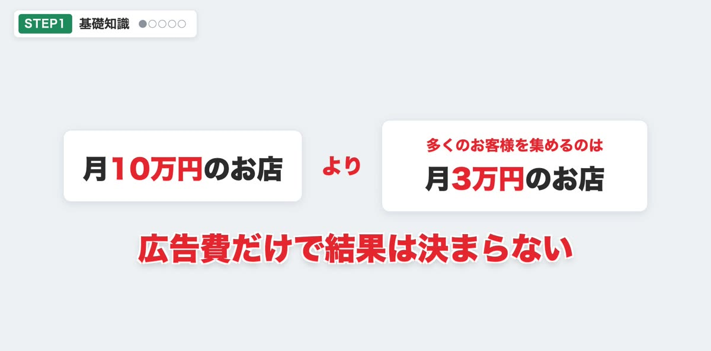
この先に出てくる予算の決め方、広告の本数、配信を始める時間、数字の見方。こうした話は、すべてこの3つのどれかにつながっています。ばらばらのノウハウとして覚える必要はありません。この3つの考え方に立ち返れば、自然と答えが出せるようになります。
考え方1：AIに正しい情報を渡し、学習してもらう
Meta広告には、誰に広告を届けるかを判断するAIが組み込まれています。私たちが配信先を細かく指定するのではなく、このAIの判断によって広告が配信されます。
配信を始めると、AIはInstagramやFacebookの利用者の情報と、広告への反応を見ながら、成果につながりやすい人を探していきます。予約などの成果を正しく計測できていれば、「こういう人が予約してくれた」という情報をもとに、似た人へ届けてくれます。
つまり、配信を始めてしばらくは、AIが誰に届けるべきかを探っている状態です。ただし、配信直後の数字が必ず悪いわけではありません。最初から良い成果が出ることもあります（STEP5で詳しく説明します）。
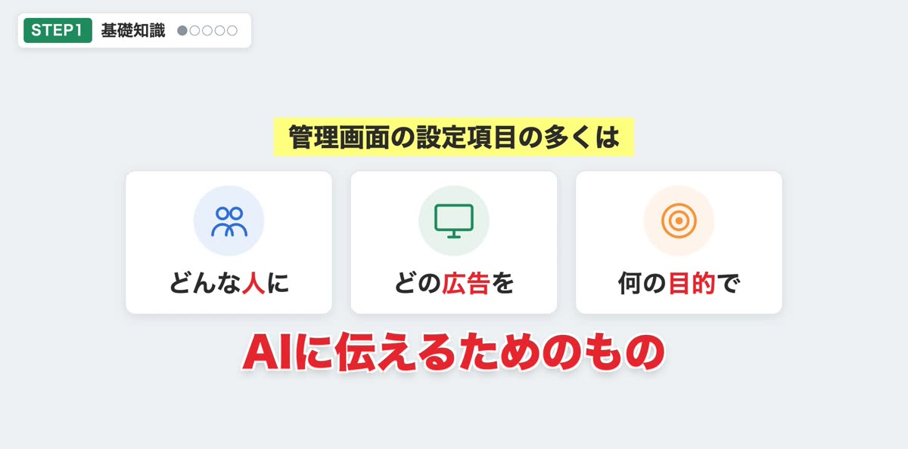
管理画面にはたくさんの設定項目がありますが、その多くは「どんな人に、どの広告を、何の目的で届けたいか」をAIに伝えるためのものです。設定に迷ったときは、「この設定で、AIに正しい情報を渡せているか」と考えてみてください。
Metaが届けたいのは「利用者にも広告主にも良い広告」
ここで、Metaがどのような広告を届けたいと考えているかを見ておきます。InstagramやFacebookは、利用者が使い続けてくれることで成り立っています。一方で、事業を支えているのは、広告主からの広告収入です。
- 利用者にとって広告が不快であれば、サービスを使い続けてもらえない
- 広告主に成果が出なければ、広告を出し続けてもらえない
利用者と広告主、両方にとって良い状態を保つことが、Meta自身にとっても大切なのです。だからこそ、広告費を多く払った広告が、そのまま表示されるわけではありません。この考え方を形にしたものが、次に説明するオークションです。
考え方2：広告はオークションで表示される
Instagramを開いたときに表示される広告の枠には、限りがあります。その1つの枠に、複数の広告主が「自分の広告を表示したい」と競い合っています。そこで選ばれた広告が表示されます。
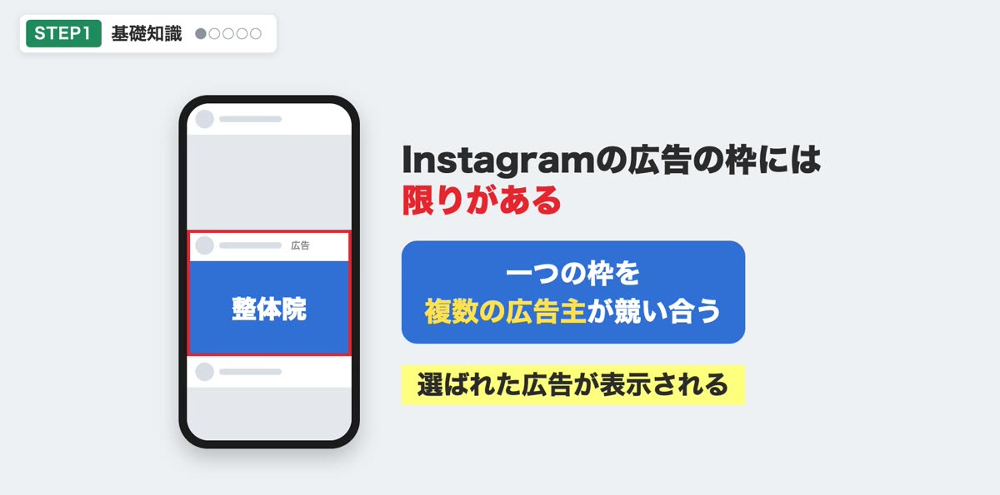
オークションで評価されるのは、次の3つを合わせた「合計価値」です。
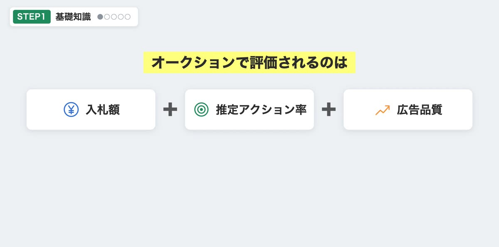
| 要素 | 意味 |
|---|---|
| 入札額 | その枠にいくらまで支払うか。多くの場合、設定した予算をもとにAIが自動で調整します |
| 推定アクション率 | 広告を見た人が、予約などの行動を取りそうかという予測 |
| 広告品質 | 見た人の反応などで判断されます。非表示や報告が多い広告は不利になり、反応の良い広告は有利に働きます |
たとえば、AさんのInstagramの広告枠に、B社、C社、D社の広告が候補として並び、AIがそれぞれを総合的に評価して、表示する広告を決める。そんなイメージです。
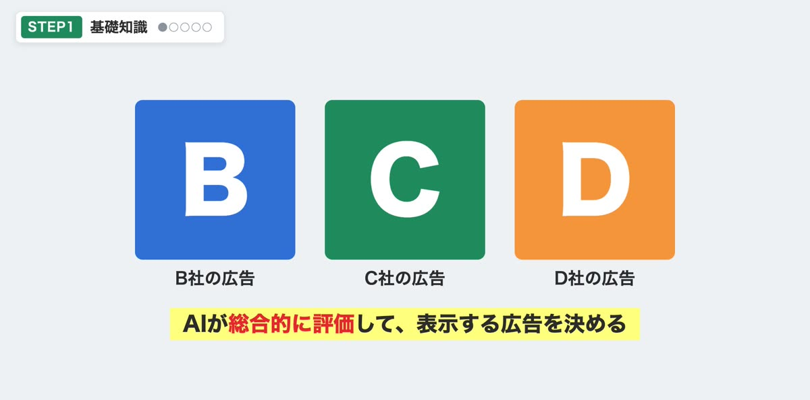
すぐにすべてを理解する必要はありません。覚えておいてほしいのは、広告費の額だけで勝敗は決まらず、広告の質が結果を左右するということです。
考え方3：成果は上流から逆算して判断する
広告の結果を見るときは、まず最終的な成果から確認します。広告費に対してどれだけ売上が得られたか。次に、予約1件を得るためにかかった費用。そのうえで、広告がどれだけクリックされたか、クリック後に何パーセントが予約につながったかと、さかのぼって見ていきます。
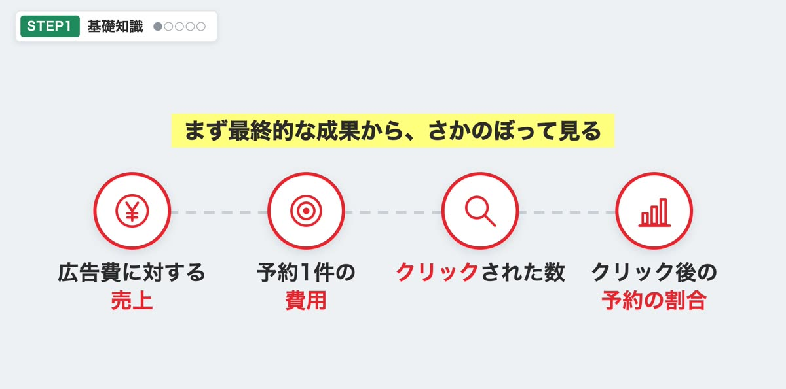
ここで大切なのは、「広告がクリックされた」ことと「予約された」ことは同じではない、という点です。クリックのあとには、予約サイトに移動し、メニューを選び、日程を選び、情報を入力する、といういくつものステップがあります。その一つひとつが、お客様が離れてしまうポイントになります。
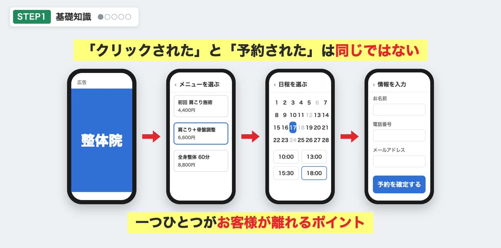
たとえば、同じ広告費で、次のような結果だったとします。
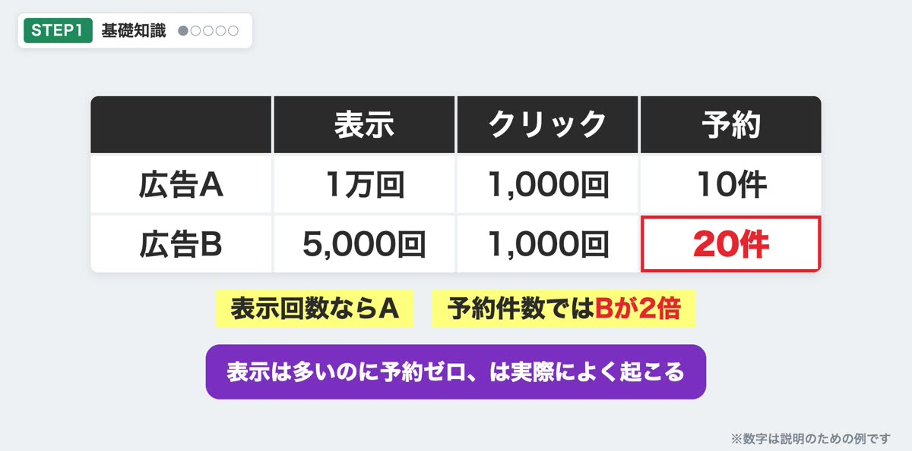
表示回数だけを見ればAが上ですが、クリック数は同じで、予約件数ではBが2倍です。これは説明のための数字ですが、表示は多いのに予約はゼロ、ということは実際によく起こります。表示回数やクリック数のような途中の数字だけで判断せず、最終的な成果から逆算して、どこで止まっているかを見てください。
- 表示回数（インプレッション）：広告が画面に表示された回数
- クリック率：表示された回数のうち、クリックされた割合
- 予約1件あたりの広告費（CPA）：広告費 ÷ 予約件数
- 広告費に対する売上（ROAS）：広告から生まれた売上 ÷ 広告費
- MetaのAIに正しい情報を渡し、学習してもらう（予算の目安や配信を始める時間も、ここから考えられる）
- 広告はオークションで表示される（広告費の大きさだけでなく、利用者に好まれる質の高い広告が有利）
- 成果は上流から逆算して判断する（売上 → 来店 → 予約 → 予約サイト → 広告の表示の順にさかのぼる）
この先で新しい話が出てきたときも、「3つのうち、どれにつながる話か」を考えてみてください。ばらばらのノウハウではなく、一本の筋として理解できるはずです。
STEP2 運用戦略：誰に何を案内し、いくらまでかけるか
STEP2では、広告の運用戦略を決めます。決めるのは、次の2つです。
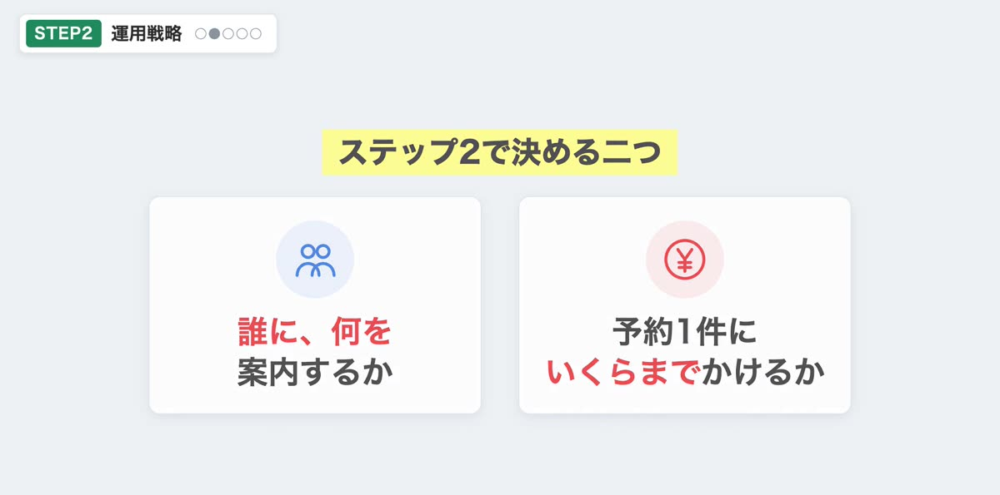
ここが曖昧なままだと、広告を作って配信しても、結果を判断できません。広告を出す前に、まず判断の基準を決めておきましょう。ただし、最初に決める内容は、あくまで仮の案です。実際に配信してみて、数字を見ながら見直していきます。最初の案が外れただけで「広告は効かない」と結論づけないために、伝える魅力の候補をいくつも用意しておきます。
手順1：伝える魅力を10個、20個と書き出す
同じサービスでも、どの魅力を伝えるかによって、届く相手が変わります。美容室の初回カットなら、次のような魅力が考えられます。
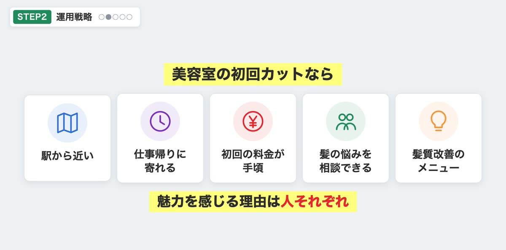
提供するサービスは同じでも、お客様が魅力を感じる理由は、人それぞれです。まずは、思いつく魅力を、10個、20個と書き出してください。今の段階で、どれが当たりかを決める必要はありません。この一覧が、STEP3で広告の文章や画像を作るときの候補になります。
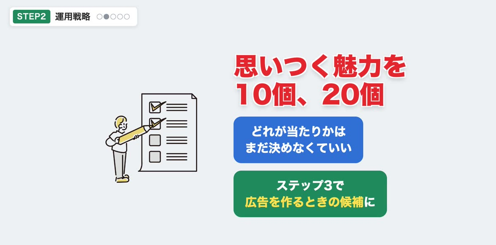
案内したいメニューが決まっている場合は、そのメニューを必要とする人が、どんな悩みや希望を持っているかから考える方法もあります。また、広告の反応が弱いときも、サービス自体に需要がないとすぐに決めず、伝える魅力が合っていたかを確認します。
セクション4で書いたメニューについて、次の切り口で書き出してみてください。
- 場所・通いやすさ（駅から近い、駐車場がある、仕事帰りに寄れる など）
- 料金（初回の料金、回数券、分かりやすい総額 など）
- 悩みの解決（どんな悩みに応えられるか）
- 人・雰囲気（相談しやすい、個室、スタッフの得意分野 など）
- メニューの特徴（専門メニュー、使っている機器や方法 など）
手順2：広告ライブラリで、実際に出ている広告を調べる
伝える魅力の候補を出したら、実際に出ている広告を調べます。そのために使えるのが、Metaの広告ライブラリです。広告ライブラリは、Metaが公開しているページで、いま配信されている広告の画像、動画、文章、掲載開始日などを確認できます。広告を出すための管理画面とは別のページで、誰でも無料で見ることができます。
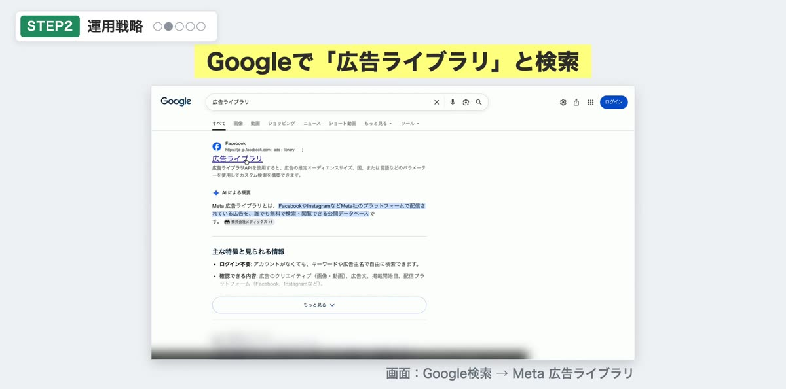
使い方は次のとおりです。
- Googleで「広告ライブラリ」と検索して開く
- 国を「日本」にし、カテゴリを「すべての広告」に設定する
- 「美容室」「縮毛矯正」「整体」「肩こり」など、業種やサービスの言葉で検索する
- 近くのお店を調べるなら地域名を加え、広く表現を調べたいなら地域名を外して比べる
- 各広告の掲載開始日を確認する。ほかの広告より長く配信が続いているものは、続ける理由がある可能性がある
見た目の新しさだけで判断せず、複数の広告を比べながら、伝え方と配信期間をあわせて見てください。参考にする広告を絞り込むための手がかりになります。
参考になりそうな広告を見つけたら、次の3つの項目をメモしてください。
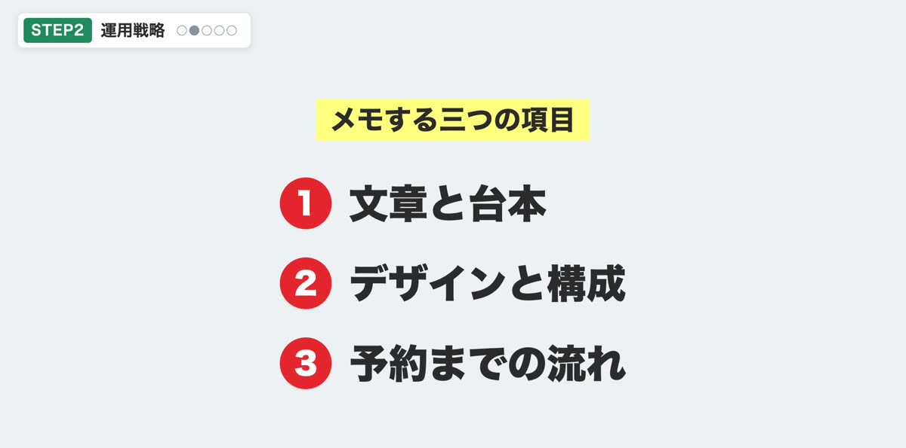
| 項目 | 見るポイント |
|---|---|
| 文章と台本 | どんな言葉で、どの魅力を中心に伝えているか。動画なら何を話しているか |
| デザインと構成 | 写真・動画・イラスト・文字の使い方。最初に何を見せ、そのあとどう展開するか |
| 予約までの流れ | 広告から移動するページと、情報を見てから予約に進むまでの道筋 |
1本だけで判断せず、複数の広告を比べてください。共通点や違いなど、それぞれのお店の戦略が見えてきます。それを、自分のお店に落とし込んでください。
※掲載されている広告や、配信期間が長い広告が、成果を出しているとは限りません。
手順3：広告を届ける地域（商圏）を決める
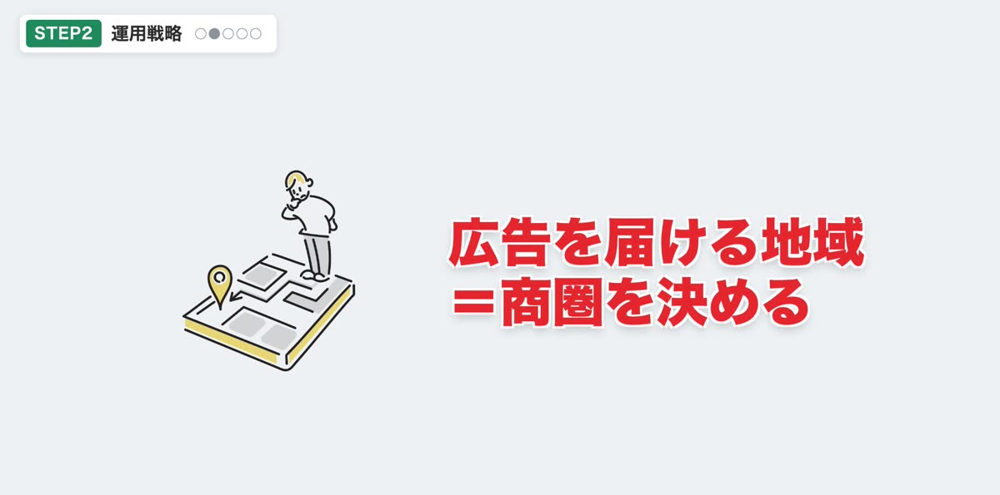
次に、広告を届ける地域、つまり商圏を決めます。お店からの距離だけで区切ると、実際の来店しやすさとずれることがあります。同じ距離でも、徒歩、電車、車のどれで来るかによって、負担が違うためです。
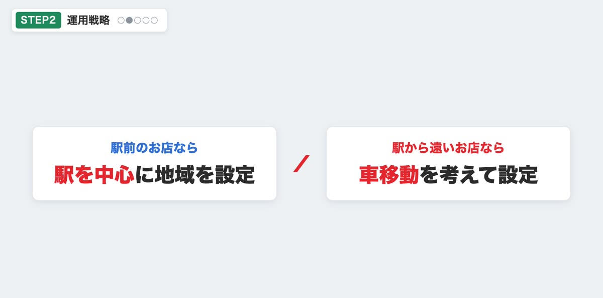
出発点として、今のお客様がどの地域から来ているかを確認してください。過去のお客様の記録から地域を集計し、その分布を参考に、最初の地域設定を決めます。Meta広告では、地図上にピンを刺して、そこから半径何キロと設定することが多いです。最初から完璧な範囲を当てる必要はありません。配信後に、どの地域から問い合わせや予約が来るかを確認し、調整します。
地域が決まったら、年齢や性別など、どんな人が来ているのかも考えます。最終的には、具体的な一人が思い浮かぶくらいまで、ターゲットをイメージして決めてください。
手順4：予約1件あたりの目標額を決める
次は、予約や問い合わせ1件を獲得するのにかかる広告費の目標を決めます。まず、1件あたりの広告費の計算です。
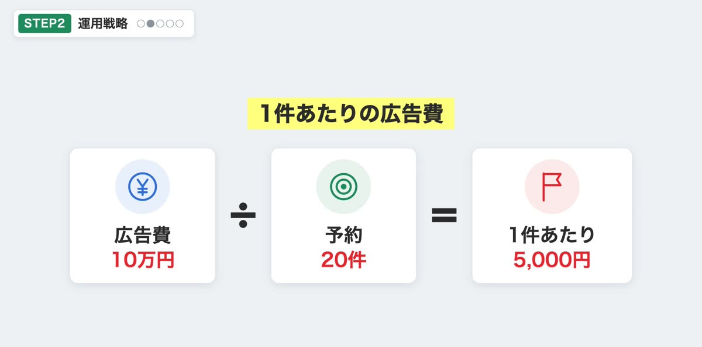
たとえば、広告費10万円で予約が20件なら、1件あたりの広告費は5,000円です。ただ、1件あたり8,000円だったとしても、それだけでは高いのか安いのか判断できません。お店にとって、1件にいくらまでかけられるか、先に基準を決めておく必要があります。
- 基準がないと、十分に利益が出ている広告を、「高そう」という印象だけで止めてしまうことがある
- 逆に、利益が出ていないのに、判断の基準が分からないまま広告を続けてしまうこともある
この目標は、広告を続けるか、見直すかを判断するためのものです。次に、お店の数字から目標を決める方法を説明します。
手順5：1人のお客様から残る利益から逆算する
目標を決めるために、1人のお客様から、最終的にどれだけ利益が残るかを確認します。回数券や月額制のあるお店を例にすると、分かりやすくなります。
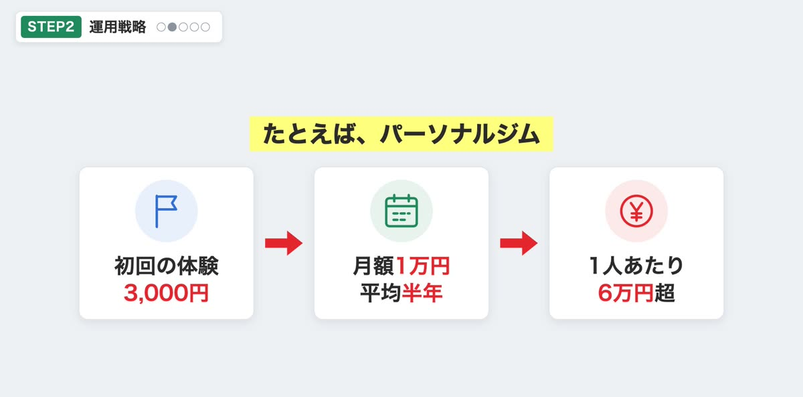
たとえば、パーソナルジムで、初回の体験が3,000円でも、その後、月額1万円のコースに入会し、平均で半年続くなら、1人あたりの売上は6万円を超えます。初回の料金だけを見ると、広告費に3,000円以上はかけられないように感じますが、続けて通っていただく分まで含めると、考え方が変わります。
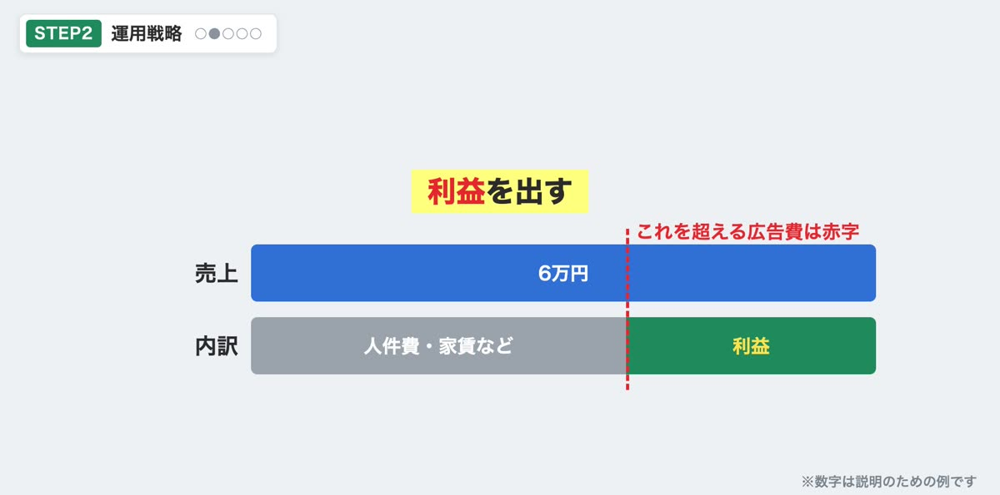
この売上から、人件費や家賃などの費用を差し引いて、利益を出します。その利益を超える広告費をかけると、赤字になります。逆に、十分な利益が残る範囲なら、初回の料金より高い広告費をかけても、採算が合う場合があります。
ここで重要なのが、続けて通っていただく割合です。同じ初回の料金でも、続ける方が多いお店と少ないお店では、かけられる広告費が変わります。自分のお店でどのくらいの方が続けているか分からなければ、まず過去の記録から確認してください。
※数字は説明のための例です。
- LTV（顧客生涯価値）：1人のお客様が、通い始めてから通わなくなるまでに使ってくださる金額の合計
- 継続率：初回のあとも続けて通ってくださる方の割合
手順6：月の予算から1日の予算を出す
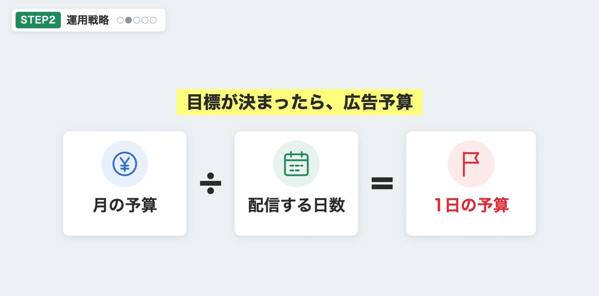
目標が決まったら、広告予算を考えます。まず、毎月いくらまで使えるかを決め、配信する日数で割って、1日の予算を出します。
ここで、STEP1の1つ目の考え方、AIの学習を思い出してください。AIは、予約などの成果のデータが集まるほど、学習が進みます。そのため、1日の予算は、予約1件あたりの目標額以上を目安にすると、データが集まりやすくなります。たとえば、予約1件を5,000円で獲得したいなら、1日5,000円以上です。
ただし、あくまで目安です。月3万円でも成果は出せますので、無理に広告費を増やす必要はありません。予算が少ない場合は、判断に必要なデータが集まるまで、時間がかかると考えておきましょう。お店の資金と、どのくらいの速さで判断したいかをあわせて決めてください。
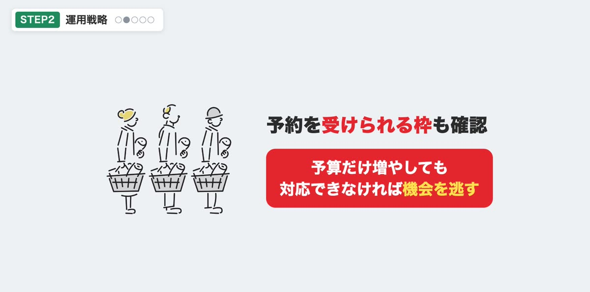
もう一つ、予約を受けられる枠も確認します。月20件の新規予約を見込むなら、それを受け入れられる体制が必要です。予算だけ増やしても、対応できなければ、せっかくの機会を逃します。
- 案内したいメニューの魅力を10〜20個書き出した
- 広告ライブラリで、同業の広告の「文章と台本」「デザインと構成」「予約までの流れ」をメモした
- 今のお客様の地域・年齢・性別から、商圏とターゲットを決めた
- 1人のお客様から残る利益をもとに、予約1件あたりの目標額を決めた
- 月の予算と1日の予算を決め、予約を受けられる枠を確認した
STEP3 広告制作：きれいさより「自分に関係がある」
STEP3では、広告の画像や動画を作ります。まず、Instagramを見ている人を想像してみてください。広告を見るためにInstagramを開く人は、まずいませんよね。友達のストーリーを見たり、ショート動画を楽しんだり。多くの人は、暇つぶしや娯楽のためにInstagramを開いています。
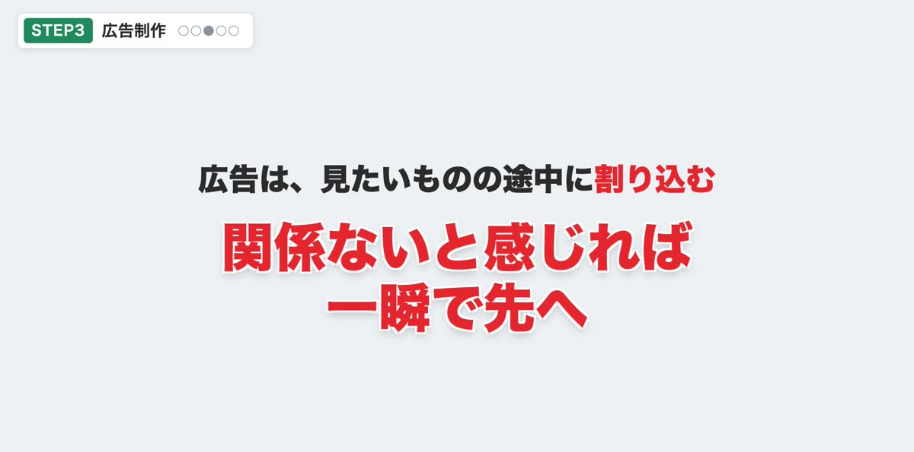
つまり、広告は、見たいものの途中に割り込んで表示されるものです。自分に関係がないと感じれば、一瞬で先へ進まれてしまいます。だからこそ大切なのは、見た目の美しさよりも、見た人が「これは自分に関係がある」とすぐに分かることです。
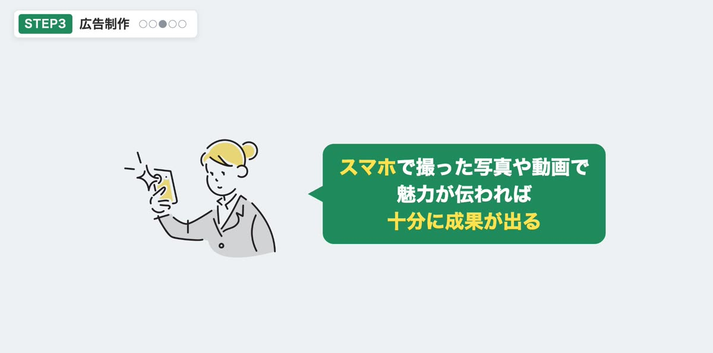
高い機材でプロのように撮影しなくても、スマホで撮影した写真や動画で、お店の様子やサービスの魅力が伝わっていれば、十分に成果を出すことができます。今のスマホなら、きれいな写真や動画が撮れます。高い機材で質の良い写真を撮ることも改善の手がかりになりますが、それは後からで十分です。まずはスマホで、きれいに撮ることから始めてください。
最初の数秒（フック）で関心を持ってもらう
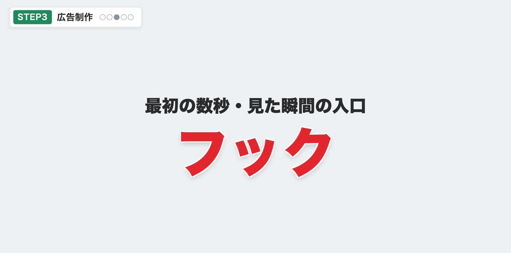
動画の最初の数秒、または画像を見た瞬間に、人は、その広告が自分に関係あるかどうかを判断します。この入口の部分を、「フック」と呼びます。たとえば、看板を見ても何のお店か分からなければ、どれだけサービスが良くても、お店に入るきっかけにはなりにくいですよね。広告も同じで、まず最初に関心を持ってもらう必要があります。
フックには、STEP2で書き出した魅力を使います。代表的なのは、次の3つの示し方です。
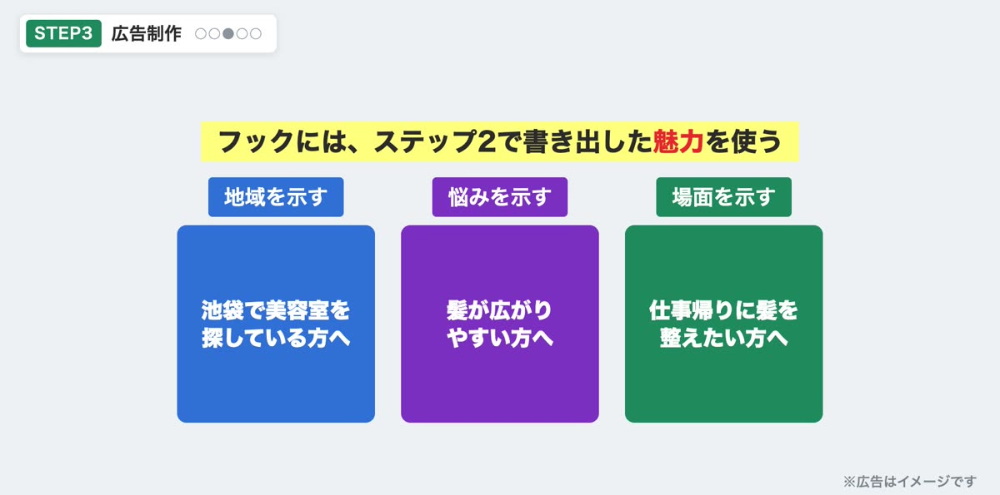
| 示し方 | 例 |
|---|---|
| 地域を示す | 「池袋で美容室を探している方へ」 |
| 悩みを示す | 「髪が広がりやすい方へ」 |
| 利用する場面を示す | 「仕事帰りに髪を整えたい方へ」 |
また、意外な事実を伝えたり、避けたい失敗から話を始めたりする方法も、関心を引きやすくなります。
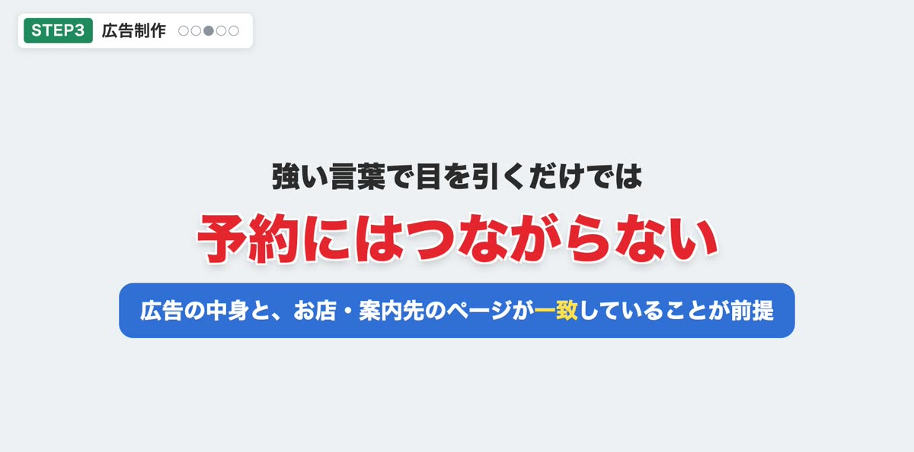
ただし、強い言葉で目を引くだけでは、予約にはつながりません。広告の中身が、お店の実際のサービスや、案内先のページと一致していることが前提です。
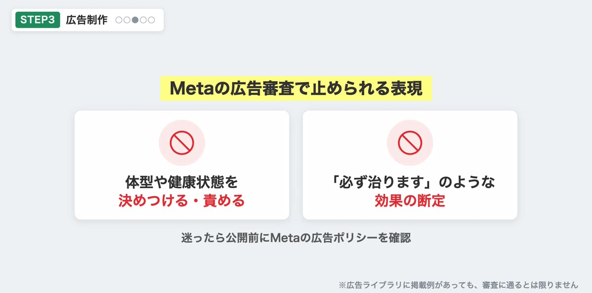
特に、見る人の体型や健康状態を決めつけたり、責めたりする表現や、「必ず治ります」のような効果の断定は使いません。Metaの広告審査で止められる原因になります。表現に迷ったら、公開前にMetaの広告ポリシーを確認してください。どの言葉がお客様に届くかは、配信して確かめます。候補を複数用意しておくと、比べながら改善できます。
※広告ライブラリに掲載例があっても、審査に通るとは限りません。
同時に出す広告は3〜5本。違いは大きくつける
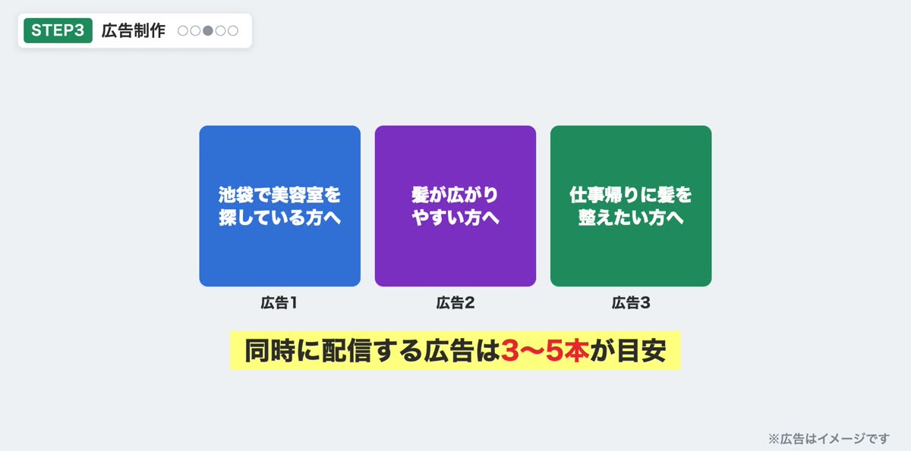
同時に配信する広告は、3〜5本を目安にします。ここで、STEP1の2つ目の考え方、オークションを思い出してください。本数が多すぎると、Metaが高い評価をした広告に配信が集中し、ほとんど表示されない広告が出てきます。表示されなければデータが集まらず、その広告が本当に良くないのかどうかも判断できません。
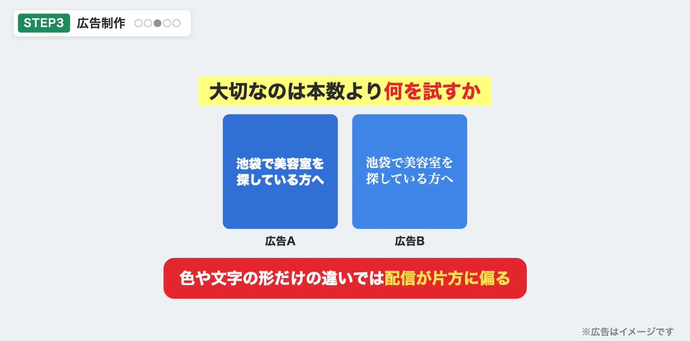
同じ理由で、大切なのは、本数よりも、それぞれで何を試すかです。色や文字の形だけを少し変えた広告では、配信が片方に偏り、もう片方には十分なデータが集まりづらいです。見た人にも違いが分かる広告を用意してください。たとえば、「地域」「悩み」「場面」のように、フックの切り口そのものを変えるのがおすすめです。結果を見て、反応が良かった伝え方を、次の広告づくりに生かします。この繰り返しが、広告の改善につながります。
文章と見出しは、来店前に知りたい情報を
広告に添える文章と見出しも、見る人が判断しやすい内容にします。まず、広告を見た人が、来店する前に知りたい情報を考えます。料金、場所、営業時間、予約方法などです。
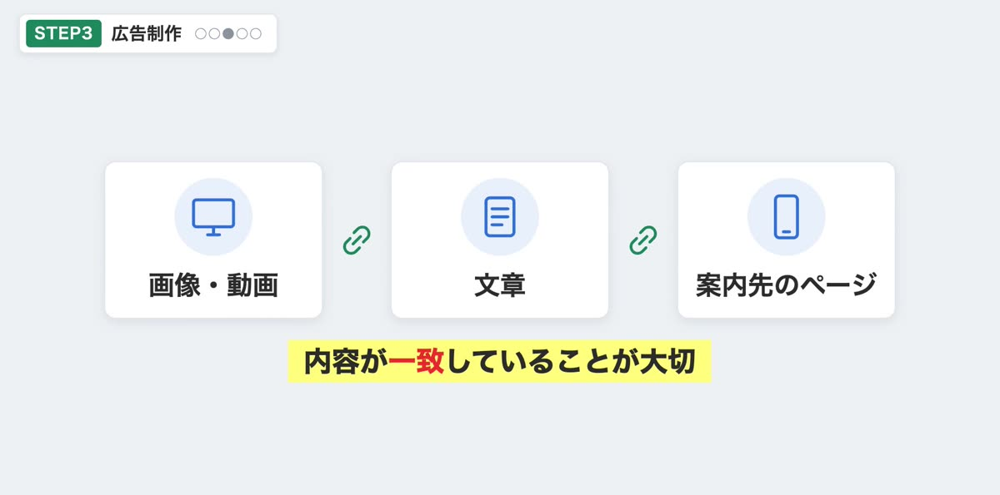
画像や動画で伝えた内容と、文章や案内先のページの内容が一致していることも大切です。STEP2で調べた広告の書き方を参考にして、自分のお店のサービスと条件に合わせて書き直してください。ここは、結果を見て改善しましょう。
公開前に、自分で見え方を確かめる
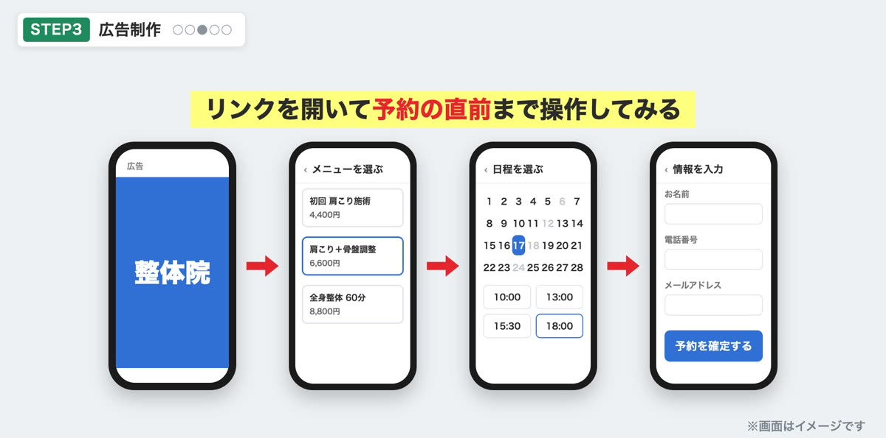
広告を公開する前に、自分で、広告の見え方を確認してください。設定した画像や動画が正しく表示されているか、リンクが正しいページにつながるかを見てください。リンクを開いて、予約の直前まで実際に操作してみると、途中で迷うところにも気づけます。
- スマホで、お店の様子やメニューの魅力が伝わる写真・動画を撮った
- フックの切り口（地域・悩み・場面など）が違う広告を3〜5本用意した
- 体型や健康状態を決めつける表現や、効果の断定が入っていない
- 文章に、料金・場所・営業時間・予約方法など、来店前に知りたい情報を入れた
- 広告と案内先のページの内容が一致していて、予約の直前まで迷わず進める
STEP4 アカウント設計：5つのアカウントを正しくつなぐ
広告を出すには、いくつかのアカウントを用意して、正しくつなぐ必要があります。名前が似たものが多いため、まず全体の役割を整理します。
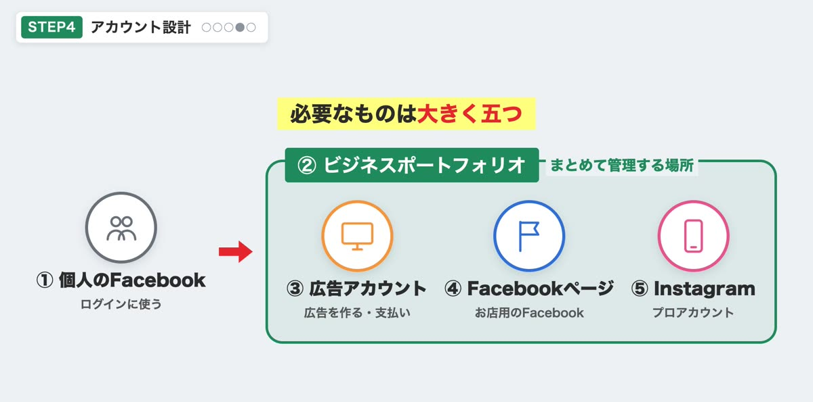
| アカウント | 役割 |
|---|---|
| ① Facebookの | 管理画面にログインするためのアカウント |
| ② ビジネス | お店のFacebookページ、Instagram、広告アカウント、担当者の権限をまとめて管理する場所 |
| ③ 広告 | 実際に広告を作り、配信の結果や支払いを確認する場所 |
| ④ Facebookページ | 個人のFacebookではなく、お店用のFacebookアカウント |
| ⑤ Instagram | プロアカウントにしてから使います |
個人のFacebookアカウントでログインしても、広告に個人の名前が出るわけではありません。主に出るのは、FacebookページとInstagramの情報です。このアカウントの関係は、実際に自分で作成して、触って慣れてください。
① ビジネスポートフォリオを作る
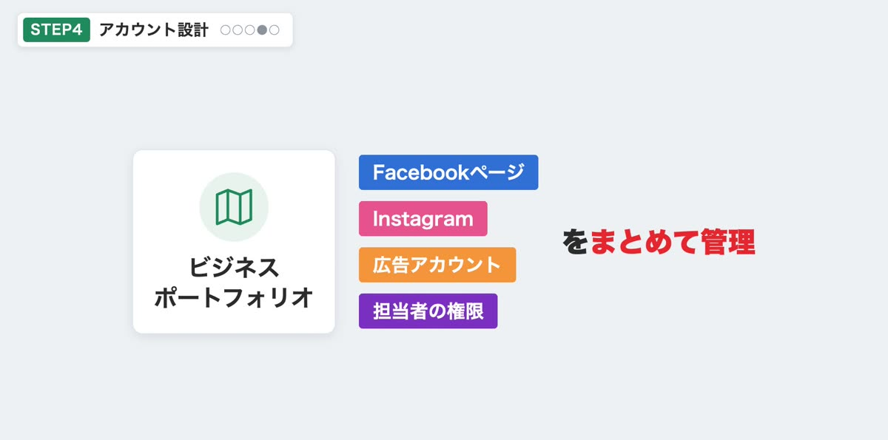
まず、ビジネスポートフォリオを作成してください。これは、お店のFacebookページ、Instagramアカウント、広告アカウント、担当者の権限などを、まとめて管理する場所です。Facebookの個人アカウントの左側のメニューから「広告マネージャ」を開いてください。左上のアイコンと数字が並んでいるところから、新しいビジネスポートフォリオを作成できます。すでにアカウントがある場合は、そちらを利用しても大丈夫です。
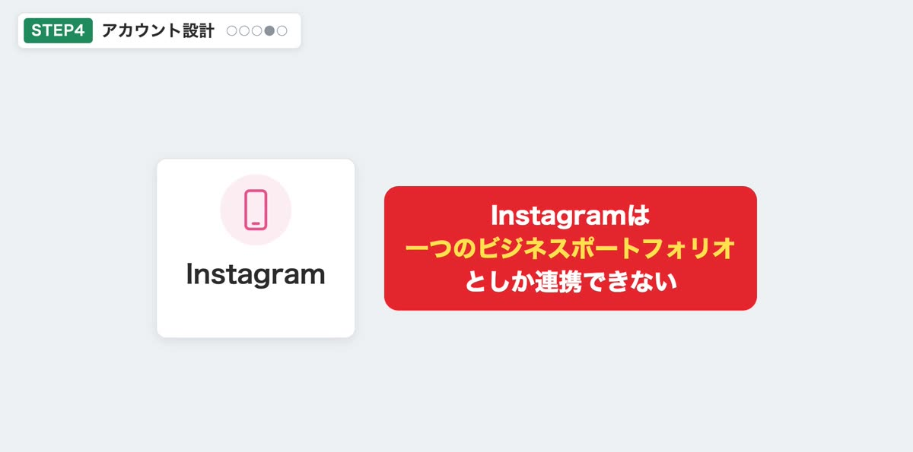
特に注意したいのが、Instagramは1つのビジネスポートフォリオとしか連携できないという点です。すでに別のビジネスポートフォリオと連携している場合は、新しく作成したビジネスポートフォリオでは利用できません。
② FacebookページとInstagramを整える
次に、広告に表示されるお店の情報を整えます。Facebookページがまだない場合は、ビジネスポートフォリオの「ページ」から新しく作成できます。Instagramは、すでにあるアカウントを、ビジネスポートフォリオの「Instagramアカウント」から連携してください。
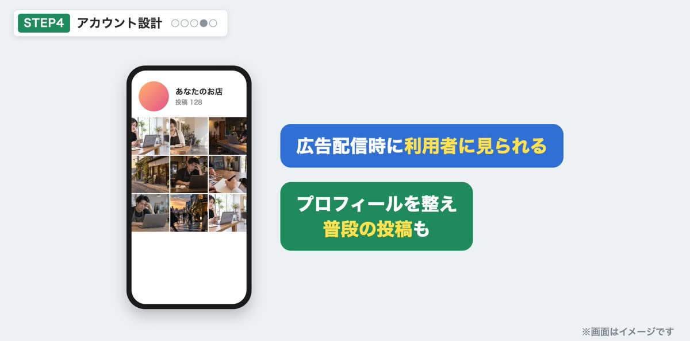
このFacebookページとInstagramは、広告配信時に利用者に見られる部分になります。プロフィールを整え、普段の投稿も行ってください。
③ 広告アカウントを作り、支払い方法を設定する
最後に、広告アカウントを作成してください。広告マネージャとも呼びます。ビジネスポートフォリオの「広告アカウント」から新しく作成できます。作成時は、時間帯と通貨を日本に合わせてください。ここで設定するアカウント名は表に出ない情報なので、自分で管理しやすい名前を設定してください。迷ったら店名で大丈夫です。
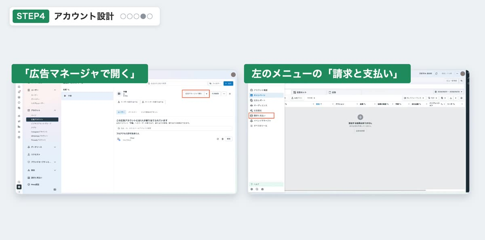
広告アカウントを作成したら、忘れないうちに広告費の支払い方法を設定してください。広告アカウントを開き、左のメニューの「請求と支払い」から設定できます。ここでは、クレジットカードを登録するケースが多いです。
ここまでのアカウント作成の手順は、実際の管理画面で1画面ずつ解説した「アカウント設計マニュアル」にまとめています。この記事で全体像をつかみ、マニュアルを見ながら実際に手を動かしてみてください（受け取り方は、この記事の最後にあります）。
④ Metaピクセル：成果をAIに伝える仕組み
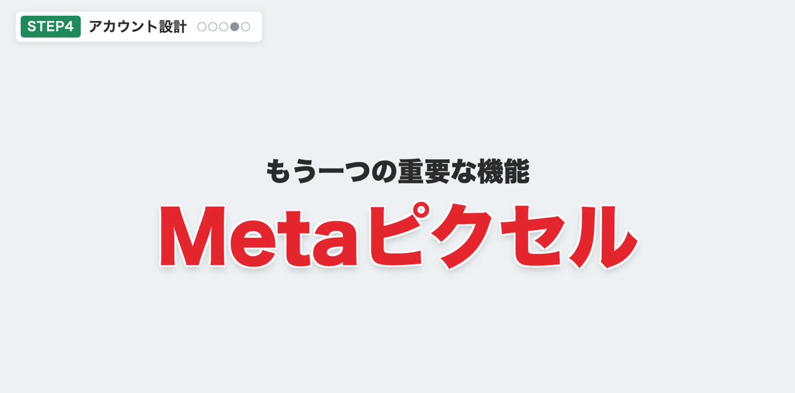
もう一つ、Meta広告には重要な機能があります。それが、Metaピクセルと呼ばれるものです。STEP1で、MetaのAIの学習が重要だと説明しましたが、そのAIの学習の中核を担うのが、このMetaピクセルです。
Metaピクセルは、ホームページやLP、予約サイトなどに設置する、計測用のコードです。計測するのは、ユーザーの行動履歴です。
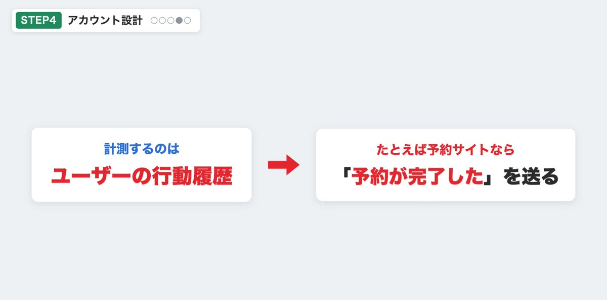
たとえば、予約サイトにこのコードを設置できれば、「予約が完了した」という情報をMetaに送ることができます。どんな人が予約したかが分かれば、AIは似た人に広告を届けやすくなります。この設定がないと、管理画面だけでは、予約の成果を十分に捉えられないことがあります。自社のホームページや予約システムが対応しているなら、設置できるか確認してください。
一方、ホットペッパーなどの外部の予約サイトは、設置できない場合があります。
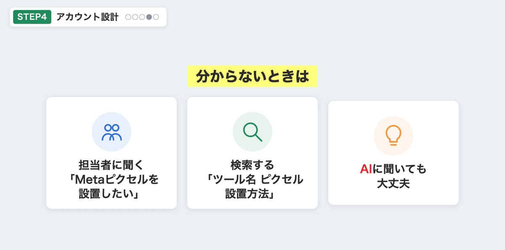
設置できるか分からない場合は、担当者に聞くか、検索してみてください。AIに聞いても大丈夫です。担当者に聞く場合は「Metaピクセルを設置したい」と言えば伝わります。検索する場合は「ツール名 ピクセル 設置方法」で検索すれば大丈夫です。
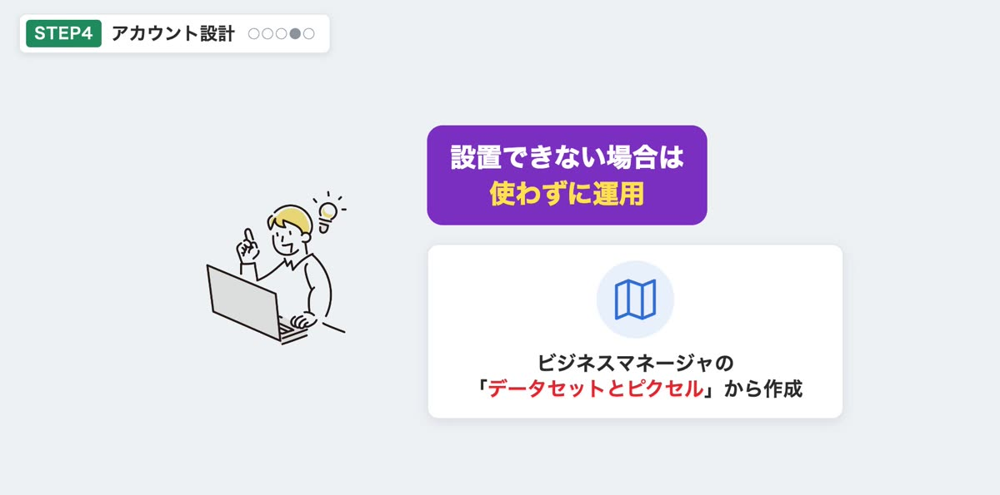
ピクセルを設置できない場合は、使わずに運用します。ピクセルは、ビジネスポートフォリオの「データセットとピクセル」から作成できます。
- Facebookの個人アカウントでログインできる
- ビジネスポートフォリオを作成した（または既存のものを使う）
- Facebookページを作成し、Instagram（プロアカウント）を連携した
- 広告アカウントを、時間帯と通貨を日本にして作成した
- 「請求と支払い」から支払い方法を登録した
- ホームページや予約システムにMetaピクセルを設置できるか確認した
STEP5 公開と改善：数字は最終成果からさかのぼる
STEP5は、公開と改善です。まず広告の公開方法の概要を説明し、そのあと公開後の数字の見方と改善の方法を解説します。
キャンペーン → 広告セット → 広告 の3階層
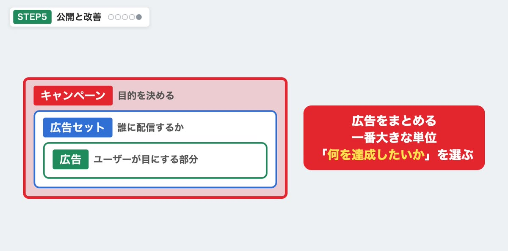
Meta広告は、次の3つの階層で設定します。「キャンペーン➡︎広告セット➡︎広告」。この構造を覚えておくと、管理画面で迷いにくくなります。
| 階層 | 決めること |
|---|---|
| キャンペーン | 広告をまとめる一番大きな単位。「この広告で何を達成したいか」という目的を選ぶ |
| 広告セット | 主に誰に配信するのかを決める場所。配信エリア、年齢、性別、プラットフォームなど |
| 広告 | 画像、動画、遷移先のURLなど、実際にユーザーが目にする部分 |
キャンペーンの目的を選ぶ
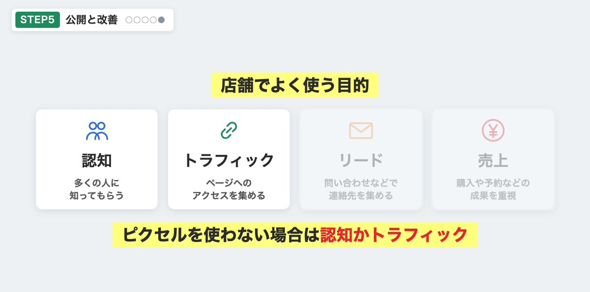
店舗でよく使う目的には、認知、トラフィック、リード、売上などがあります。
| 目的 | 内容 |
|---|---|
| 認知 | 多くの人に知ってもらうこと |
| トラフィック | ページへのアクセスを集めること |
| リード | 問い合わせなどで連絡先を集めること |
| 売上 | 購入や予約などの成果を重視すること |
大切なのは、広告で達成したいことに、目的を合わせることです。ピクセルを使わない場合は、リードと売上の目的は使えないので、認知かトラフィックを利用してください。キャンペーン目的を複数試す場合は、キャンペーンを分けて、それぞれ設定してください。キャンペーンは、広告アカウントを開き、「追加」ボタンから作成できます。
広告セットで「誰に配信するか」を設定する
次は、広告セットの設定です。広告セットとは、主に誰に配信するのかを決める場所で、キャンペーンの中に入っている構造です。配信エリア、年齢、性別、プラットフォームなどを、STEP2で決めた内容を軸に、じっくり設定してください。ほかにも項目があるので、上から一つずつ確認して設定してください。
広告を設定して公開する
最後に、広告を設定します。広告では、画像、動画、遷移先のURLなどを設定します。つまり、実際にユーザーが目にする部分です。広告は、広告セットの中に入っている構造です。広告まで設定できたら、公開して完了です。
動画では、ホットペッパーに案内する広告を想定して、キャンペーン目的を「トラフィック」にした場合の作成から公開までを、実際の管理画面で実演しています。流れは次の4つです。
- キャンペーン：目的を選ぶ（この例ではトラフィック）
- 広告セット：誰に配信するか（地域・年齢・性別など）を設定する
- 広告：画像・テキスト・リンク先を設定する
- 内容を確認して公開する
公開後は、最終的な成果から数字を見る
広告を公開したら、次は改善です。予算、業種、時期、競合によって結果は変わるため、「何日たてば必ず判断できる」という一律のルールはありません。
数字を見るときは、STEP1の3つ目の考え方のとおり、最終的な成果からさかのぼります。売上を計測できる場合は、広告費に対する売上。次に、予約1件あたりにかかった広告費。そのあとに、クリック率や、クリック後に予約した割合を見ます。
クリック率は、広告が表示された回数のうち、クリックされた割合です。私が運用を見る際は、1%を超えるとまずまず、2%で良好、3%を超えるとかなり良い、という感覚です。まずは、自分のお店の過去の数字を基準にしてください。
※目安です。広告の目的や設定によって変わります。
ただし、クリック率は途中の数字です。クリック率が高くても、予約や利益につながらなければ、見直しが必要です。反対に、クリック率が低めでも、必要な予約が取れて、採算が合っているなら、変える必要はありません。どこで成果が止まっているかを、順番に調べることが、改善の出発点です。
| 状態 | 見直す場所 |
|---|---|
| 広告が表示されるのに、クリックされない | 広告の画像や動画 |
| 広告がクリックされるのに、予約が入らない | LP、ホームページ、予約サイト |
続けるか、見直すかの判断
私が見てきた中では、配信の最初から良い反応が出る広告もあります。「最初の数字が悪くても、そのうち良くなる」と決めつけて待ち続けるのは、やめてください。一方で、成果がまだ数件しかない時点では、たまたまの可能性もあります。
判断するときは、すでに使った広告費を、予約1件あたりの目標額と比べ、成果の件数や配信期間もあわせて見ます。1日1万円使う場合と、千円使う場合では、データが集まる速さも違います。数字だけで機械的に決めず、予算と件数をあわせて判断してください。
※私の運用での目安です。すべてのお店に当てはまる基準ではありません。
また、複数の広告を配信すると、予算が集まる広告と、ほとんど使われない広告が出ることがあります。配信されなかった広告を、すぐに失敗と決めないでください。表示が少なければ、成果を評価するだけのデータがありません。
一つの基準として、広告の表示回数が1,000回を超えてから判断するのがおすすめです。
広告と「受け皿」の両方を見る
成果が弱いときは、広告と、広告を押したあとのページの両方を確認します。広告を見た人は、予約ページだけでなく、お店のInstagramも見に行きます。
投稿がほとんどない、からっぽのInstagramに人を集めても、穴の空いたバケツに水を注いでいるようなものです。せっかく広告で興味を持ってもらっても、お店の様子が分からなければ、予約にはつながりません。実際に、お客様の立場になって、予約の直前まで進んでみてください。
- 広告で案内したメニューが、ページでもすぐ見つかるか
- 料金や空き枠は分かるか
- 予約までの手間が多すぎないか
- Instagramを開いたとき、お店の雰囲気が伝わるか
広告とリンク先で伝える内容が違う場合も、途中で離れる原因になります。予約までの流れを改善すると、広告を変えなくても、成果が変わることがあります。広告の数字だけで判断せず、お客様が実際にたどる流れを確認することが大切です。
広告が配信されないときの確認
公開しても、広告が配信されないときは、まずキャンペーンに表示されるステータスを確認してください。
| ステータス | 意味と対処 |
|---|---|
| 審査中 | MetaのAIが、この広告を公開してよいか審査している最中です。通常は数分待てば公開されます |
| 却下 | 広告が審査に落ちています。表示された理由と広告ポリシーを確認し、体型や健康状態を決めつける表現や、効果の断定などがないか見直します |
| 支払いエラー | 広告費の支払いが止まっています。クレジットカードが停止している可能性が高いです |
| アカウントの制限 | 管理画面に示された手続きに沿って対応します。再審査をリクエストすれば復活することもあります |
理由が分からないまま広告を複製したり、制限を避けるために新しいアカウントを作ったりせず、表示された原因を一つずつ確かめてください。
- キャンペーンの目的を、広告で達成したいことに合わせて選んだ（ピクセルなしなら認知かトラフィック）
- 広告セットで、STEP2で決めた地域・年齢・性別などを設定した
- 広告に画像・動画・文章・リンク先を設定し、公開した
- 公開後は、広告費に対する売上 → 予約1件の費用 → クリック率の順に数字を見る
- 表示回数が1,000回を超えるまでは、良し悪しを決めつけない
- 予約の直前まで、お客様の立場で操作して確かめた
よくある質問
月3万円ほどの予算でも、Meta広告で成果は出せますか？
出せます。月3万円ほどで成果を出しているお店も多くあります。予算が少ない場合は、判断に必要なデータが集まるまで時間がかかると考えておきましょう。
プロのカメラマンに撮影を頼まないといけませんか？
必要ありません。スマホで撮った写真や動画でも、お店の様子やサービスの魅力が伝われば十分です。大切なのは、見た人が「自分に関係がある」とすぐに分かることです。
ホットペッパーに案内する場合、ピクセルなしでも運用できますか？
できます。外部の予約サイトにはピクセルを設置できない場合があります。その場合は、キャンペーンの目的を認知かトラフィックにして運用します。
何日たてば、広告の良し悪しを判断できますか？
一律の日数はありません。使った広告費を予約1件あたりの目標額と比べ、成果の件数や配信期間もあわせて判断します。表示回数が1,000回を超えてから判断するのが一つの目安です。
Instagramの「投稿を宣伝」と、Meta広告は何が違いますか？
別のものです。Meta広告は、専用の管理ツール（広告マネージャ）とアカウントを使って配信し、目的や配信する相手、予算などを細かく設定できます。
広告に私の個人のFacebookの名前が出てしまいませんか？
出ません。個人のFacebookアカウントは管理画面へのログインに使うだけで、広告に主に出るのは、お店のFacebookページとInstagramの情報です。
まとめ：今日からやること
ここまでの5つのステップを振り返ります。
- STEP1 基礎知識：AIの学習、オークション、上流からの逆算という、3つの考え方を押さえる
- STEP2 運用戦略：伝える魅力、地域、予約1件あたりの目標額、予算を決める
- STEP3 広告制作：見た瞬間に、誰向けで何を伝えるのかが分かる広告を用意する
- STEP4 アカウント設計：必要なアカウントの役割を理解し、作成する
- STEP5 公開と改善：目的、地域、予算を設定して公開し、最終的な成果から数字を見て、一度に一つずつ変えていく
特に、予約1件あたりの目標額を決めておくと、広告を続けるか見直すかの判断がしやすくなります。
広告は、設定して終わりではありません。仮の案を立て、配信し、数字を見て直す。この繰り返しで、お店に合う方法を見つけていきます。
正直、難しい内容も多くて、今は頭がいっぱいという方も多いと思います。実際に手を動かすことが、いちばん理解が進みます。まずはFacebookの個人アカウントの作成からで良いので、1歩ずつ進めてみてください。
Meta広告の
広告を出すまでに必要な
- Facebookアカウント
の作成 - ビジネスポートフォリオ
の作成 - 広告アカウント
の作成 - Facebookページ
の作成 - Instagram
の連携 - ドメイン認証
- ビジネス認証
- 管理者の追加
登録すると、すぐにLINEで届きます。
自店のMeta広告を、
自分たちで判断できる店舗へ。
AdMoatは運用代行をやめ、店舗が広告を内製化できるまで隣で走る「Meta広告伴走支援」に専念しています。広告を始める前でも、現在の運用に悩んでいる段階でもご相談いただけます。初回のご相談は無料です。